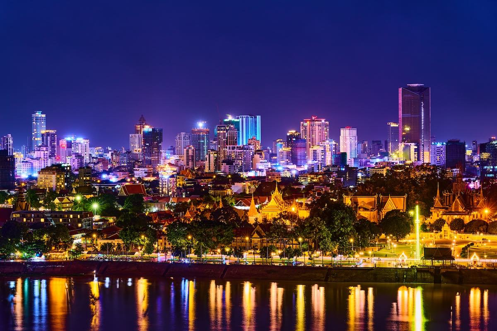
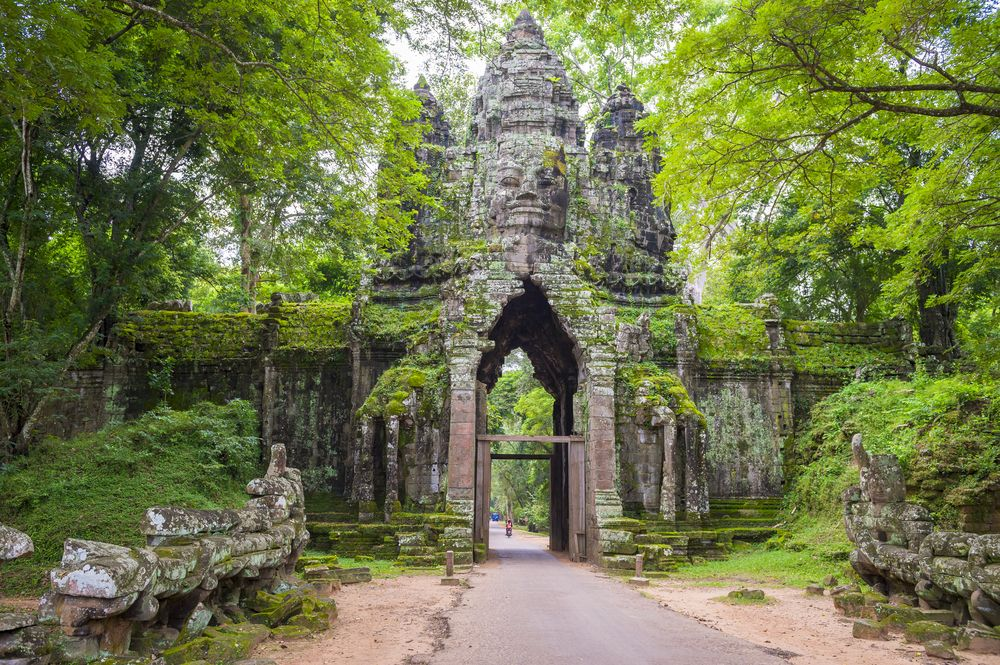

7:06 CH 01/02/2026
Cảnh Đẹp CAMPUCHIA
1. Angkor Wat
Xem thêm thông tin về Angkor Wat
Xem thêm chi tiết
\
2. Phnom Penh

Xem thêm thông tin về Phnom Penh
Xem thêm chi tiết
3. Siem Reap

Xem thêm thông tin về Siem Reap
Xem thêm chi tiết